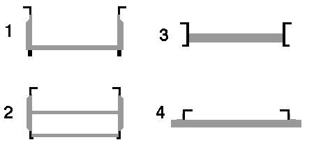

KIDDIE COASTERS
I will focus here on the earlier generation of portable, oval kiddie coasters. I will ignore the more recent rides made by Vekoma, Zierer, Pinfari, Wisdom, etc., as well as powered coaster-like rides.
Allan Hershell
The Herschell Little Dipper was designed by David Bradley, who installed the protoype at
his Beverly Park in 1946. Bradley advertised the ride for the 1947 season, and rights to
the ride were sold to Herschell near the end of 1948. Herschell made minor modifications
and advertised the Little Dipper as a new ride at the end of 1948. An improved version in
1954 had a faster lift, deeper dips at the ends, and incorporated a shock absorber in the
lift dogs. Improved versions with ground sizes of 51x102 and 37x102 feet were advertised
for the 1955 season. In 1960, new models were introduced. The advertisements for the
1960 Roller Coaster touted the Mad Mouse-style undercarriage and indicated ground
dimensions of 108x33 feet. The ride may have been produced through the firm's demise in
1970. By 1971, Chance (which acquired Herschell) no longer advertised children's coasters.
The track for the Herschell rides is flat, as shown in the figure at the bottom of the page.
The trains consist of non-trailered two-bench cars, with three-car trains being the most
common. Three general styles of train are identifiable.
- The earliest cars are rounded and have cutouts for loading only on the right
side of the train. These have a decorative grille with 'AH' on the front of the train.
Two examples are the rides now at Sandy Lake Park
(picture link) (rcdb.com)
and Little-A-Merrick-A (picture link) (rcdb.com).
This style of train is depicted in the 1954 advertisements.
- A second generation of trains appears to correspond to the 1955 models, since it is
depicted in the ads for this season. These trains are boxy and have symmetrical cutouts
on both sides of the train (although only the right side is used for loading and unloading).
The high front (approximately as tall as the car sides) is nearly flat. Examples are found at Magic Forest
(picture link) and Quassy (picture link).
- The most recent Herschell trains have rounded low fronts with a high bar in front.
This style car is depicted in advertisements for the 1960 model roller coaster. Most of
the surviving trains have padding on the front bar. Examples are the Mild Thing at Valleyfair
(picture link)
and the former Little Laser at Dorney Park
(picture link).
The latter had unusually high headrests.
Overland
Overland introduced their roller coasters at the end of 1952, and advertised them until 1957.
These were built under license from Charles Cooper's patent
(
US 2642005),
who introduced the ride at the 1951 Canadian National Exhibition. The last known
surviving example, the High Speed Thrill Coaster at Knoebels
(picture link) (rcdb),
was retired at the end of the 2008 season.
The track structure is distinctive, consisting of four rails joined by U-shaped cross-ties
having an additional horizontal brace (see figure). Like the Herschell coasters, the
flange on the rail is toward the inside, and the passenger compartment is completely above
the rail top. The trailered trains have a distinctive shape. The Knoebels coaster had an
Overland logo on the front of the train.
Schiff and Miler
Ben Schiff began selling coasters around 1952. Carl Miler must have been making coasters
by 1949, but appears to have constructed the rides, run them as concessions for a few
years, and then sold them. Since Miler rarely advertised, and made few coasters in the
earlier years (before 1960), it is hard to track these rides.
The Schiff and Miler coasters are superficially extremely similar. The track structures
appear to be identical, consisting of four rails with U-shaped cross-ties (see figure).
The trailered trains consist of 5 cars that have footwells extending between the rail tops.
Although the shapes of the cars are nearly identical, the trains can be identified by
differences in the running gear. The Miler trains use an arrangement described in the 1954
patent US 2674957
which is still used on the modern Miler coasters. The wheels are completely articulated.
Each wheel carrier has two road wheels, and the entire wheel carrier is free to rotate
about a tranverse axis so that both road wheels can follow an irregular rail. Each axle
assembly can pivot about a vertical axis. Finally, the leading axle assembly on the
front car has a longitudinal (roll) axis.
This arrangment can be seen on the coaster at Como Park in Minneapolis
(picture link)
(3 pictures)
and at Williams Grove
(picture link).
In these rides, each wheel carrier has two upstop rollers, one for each road wheel.
For comparison, the more recent (post c1990) Miler coasters use a flat rail and have
distinctive boxy fiberglas car bodies. They retain the fully articulated running gear,
but have only one upstop per wheel carrier. An example is the former Taxi Jam at PGA
(picture link)
(2 pictures).
In contrast, the Schiff trains use single road wheels. The wheel assemblies are fixed to
the car bodies, except for the leading axle assembly, which is movable about a roll axis.
The Kiddie Coaster at Steel Pier is an example
(picture link).
The ride at Castle Park in California
(picture link)
is interesting because it does not follow the pattern described above. This
is one of the last Carl Miler coasters made, but the running gear is completely different
from other Miler coasters. The wheel assemblies resemble (but are not identical to) those
found on Schiff and Molina coasters.
Molina
The Molina coasters are mechanically identical to the Schiff coasters (of which they are
a copy), and were advertised as "Schiff" coasters at least until the mid 1980s. The more
recent coasters from Molina use a fiberglas car body with a somewhat different shape from
the earlier Schiff coasters. One example is the Lil' Phantom at Kennywood Park
(picture link)(Joyrides).
Other Makers
There have been several other makers of small steel coasters, including King, Standard
Kiddie Rides, Spillman Engineering, Bradley & Kaye, Pinto Brothers, and Stacy Johnson.
Bradley & Kaye produced 26 units of the Little Dipper before selling production rights
to Allan Herschell in 1948. The Bradley & Kaye coaster at Knott's Berry Farm and the
sole surviving coaster attributed to Spillman appear distinctly different from the others
described here. The smaller Bradley & Kaye coasters made in the 1970s are similar to
those made by Herschell, but employed two-bench fiberglass cars. An example was formerly found at
Six Flags St. Louis
(picture link). The
Pinto Brothers appear to have gone out of business in the early 1950s. King began
advertising coasters between 1950 and 1954. These were powered rides
similar to the more recent Childress Kiddie Coaster. Max Gruberg's Standard Kiddie Rides
introduced a kiddie coaster at the end of 1953. Stacy Johnson began making coasters
around 1956. The Johnson coasters are reported to be very similar to those made by
Schiff and Miler. I know nothing about the mechanical details of the Pinto coasters.
Track Styles
(not to scale)

Rails and other continuous elements are shown in black, while cross-ties are shown in
gray. Diagonal bracing is omitted.
1 track used for Miler, Schiff, and Molina coasters
2 Overland track
3 modern Miler track
4 Herschell track; also used for most Bradley & Kaye coasters
Identification of the trains does not necessarily indicate the manufacturer of the track.
Some older Schiff coasters appear to have received new Molina trains. I do not know if
trains can be interchanged between the Schiff/Molina and the Miler rides.